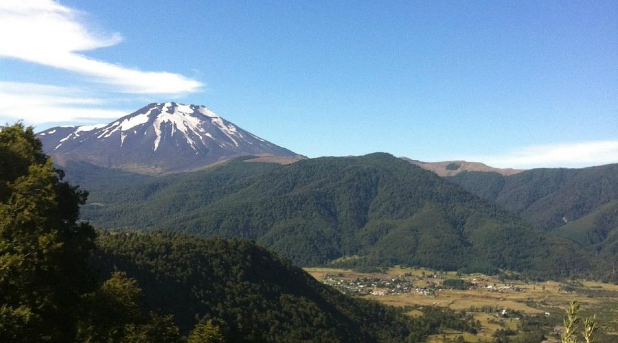

Reserva Nacional Malalcahuello

La Reserva Nacional Malalcahuello se ubica a los pies del volcán Lonquimay y ofrece senderos rodeados de araucarias, coigües y lengas. Es un destino ideal para el senderismo, la observación de flora y fauna nativa y el contacto directo con la cordillera andina.
Ubicación: Temuco, Chile
Duración: 3 horas
Volver